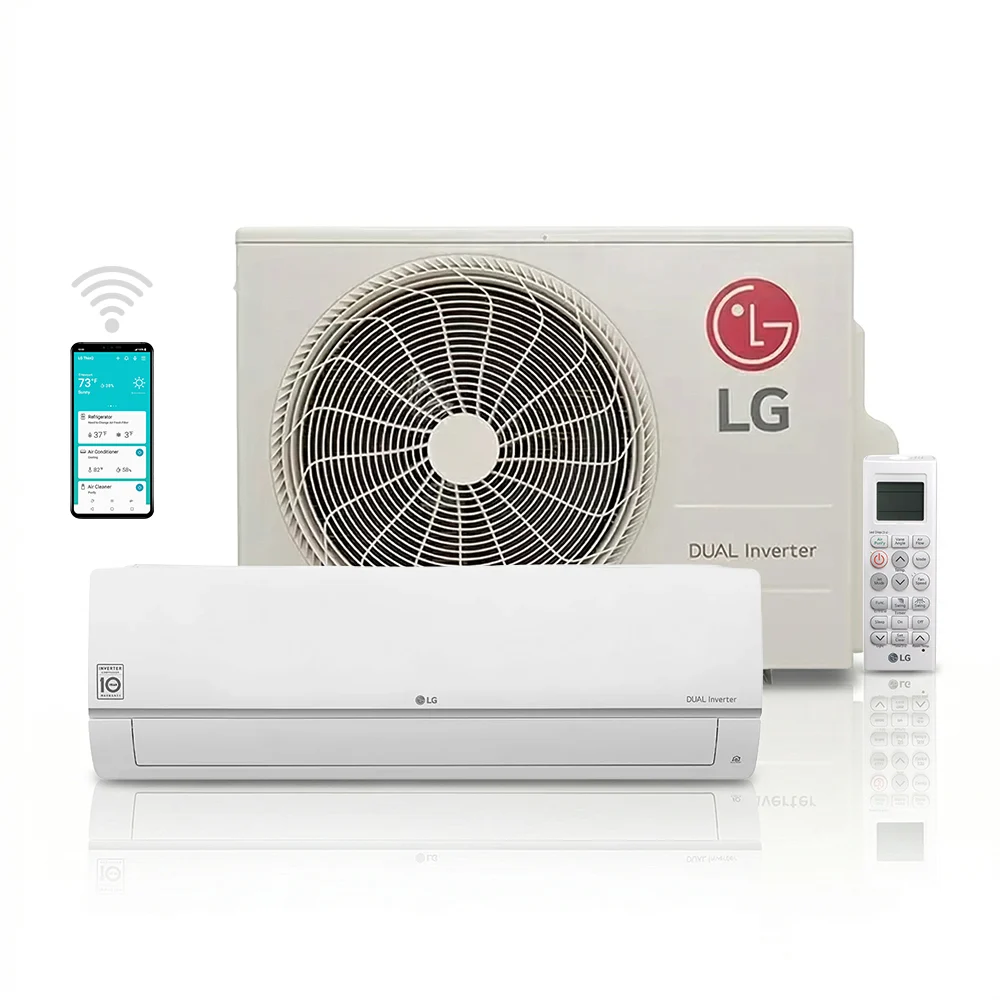
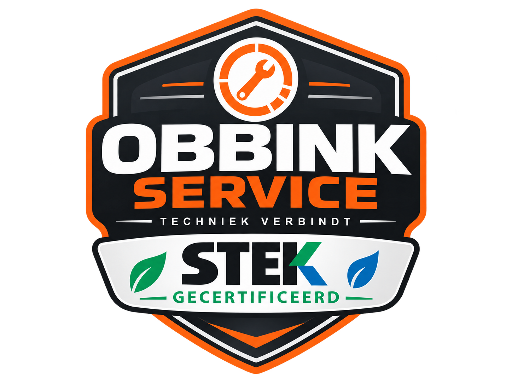
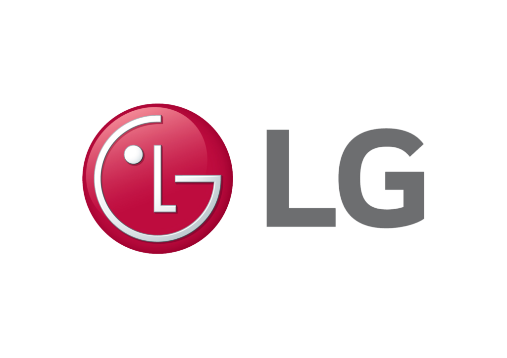
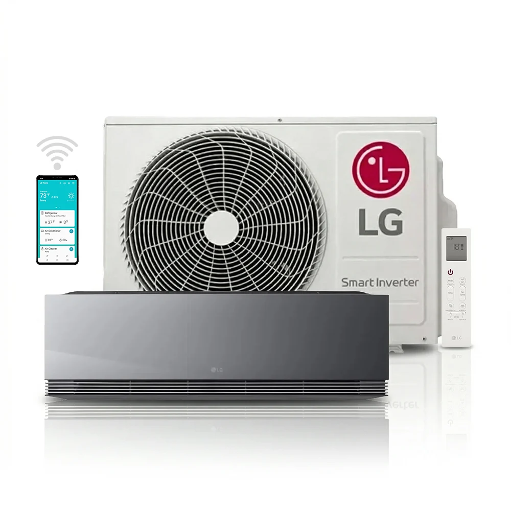
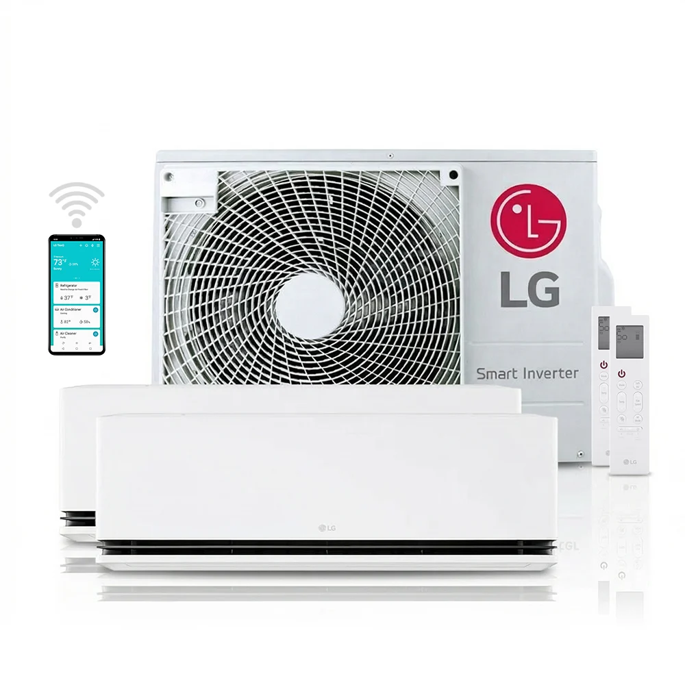
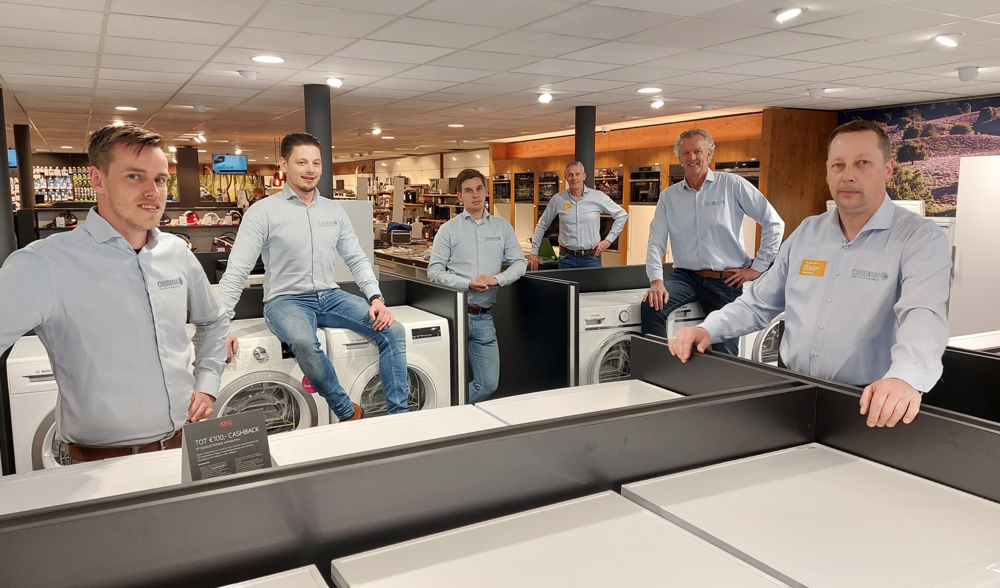

Oplossing 1 — Basismodel
Basismodel
Geschikt voor één ruimte zoals een slaapkamer, werkkamer of kleine woonkamer. Koelen en verwarmen: een nette en betaalbare oplossing.

Airco & klimaat
Een prettig binnenklimaat wordt steeds belangrijker. Een moderne airco koelt uw woning in de zomer en kan in de winter efficiënt verwarmen. Met zonnepanelen kan een airco bovendien extra interessant zijn, omdat een deel van het elektriciteitsverbruik met zelf opgewekte stroom kan worden gedekt.


Eerst de ruimte, dan de airco
We kijken naar de grootte van de ruimte, ligging, isolatie, gebruik en gewenste functies. Zo voorkomen we dat een unit te klein, onnodig groot of verkeerd geplaatst wordt.
Een binnenunit en één buitenunit. Geschikt wanneer één ruimte centraal staat.
Meerdere binnenunits op één buitenunit. Voor verschillende ruimtes met afzonderlijke regeling.
Een inverter-airco kan in veel situaties ook als aanvullende verwarmingsoplossing worden gebruikt.
Onze klimaatpartner

Betrouwbare klimaattechniek, vakkundig geïnstalleerd door Obbink Service.
Voor klimaattechniek werken we veel met LG. De systemen zijn interessant door hun stille werking, moderne invertertechniek, mogelijkheden voor koelen én verwarmen en slimme bediening. Welke oplossing past, hangt altijd af van de ruimte en de toepassing; daarover adviseren we u persoonlijk.
Van één ruimte tot het hele huis
U hoeft niet eerst alle typenummers te kennen. Wij kijken naar de ruimte, het gewenste comfort en het gebruik en adviseren vervolgens een passende oplossing.

Oplossing 1 — Basismodel
Geschikt voor één ruimte zoals een slaapkamer, werkkamer of kleine woonkamer. Koelen en verwarmen: een nette en betaalbare oplossing.

Oplossing 2 — Design & comfort
Voor wie naast comfort ook uitstraling belangrijk vindt. LG ARTCOOL combineert een modern design met stille werking, koelen én verwarmen en slimme bediening via LG ThinQ en WiFi.

Oplossing 3 — Multi-split
Een slimme oplossing voor meerdere ruimtes. Met één buitenunit kunnen bijvoorbeeld twee binnenunits afzonderlijk worden geregeld, zoals voor een woonkamer en slaapkamer of twee slaapkamers.
Van advies tot oplevering
U vertelt ons welke ruimte u wilt koelen of verwarmen en wat u belangrijk vindt.
We bepalen het passende type, de capaciteit en de beste plaats voor binnen- en buitenunit.
De installatie wordt netjes gemonteerd, aangesloten en in bedrijf gesteld.
Ook na installatie kunt u bij Obbink Service terecht voor onderhoud, vragen en storingen.
Persoonlijk advies dichtbij

9 winkels in de Achterhoek
Bekijk alle Obbink-winkelsPERSOONLIJK ADVIES DICHTBIJ
Liever samen kijken welke airco bij uw woning past? Onze specialisten bespreken uw ruimte, het gewenste comfort en de mogelijkheden voor koelen en verwarmen. Zo kiezen we samen een passende oplossing, waarna Obbink Service de installatie vakkundig kan verzorgen.
Met de juiste informatie kunnen we u direct gerichter adviseren.
AIRCO ADVIES
Hoe beter wij uw situatie kennen, hoe gerichter wij kunnen adviseren. Bekijk welke informatie en foto’s ons helpen om sneller tot een passende oplossing te komen.

Wij denken graag met u mee over de beste oplossing voor uw woning.
AIRCO ADVIES
Met een paar gegevens en duidelijke foto’s kunnen wij uw situatie vooraf beter inschatten. Dat helpt ons om gerichter te adviseren en een nauwkeuriger voorstel te maken.
Noteer de lengte, breedte en hoogte van de ruimte. Geef ook aan hoe goed de ruimte is geïsoleerd, hoeveel ramen er zijn, welk type glas aanwezig is en of er veel zoninstraling of andere warmtebronnen zijn.
Wilt u alleen koelen of ook verwarmen? Gaat het om een slaapkamer, woonkamer, kantoor of meerdere ruimtes? Deze informatie helpt ons bij de keuze van het juiste vermogen en tussen single-split of multi-split.
Maak foto’s van de ruimte en mogelijke plekken voor de binnen- en buitenunit. Informatie over de afstand tussen beide units, de elektrische aansluiting en de afvoer van condenswater helpt ons om de installatie beter vooraf in te schatten.
Tip: maak vooraf foto’s van de ruimte, de buitengevel en mogelijke montageplaatsen.